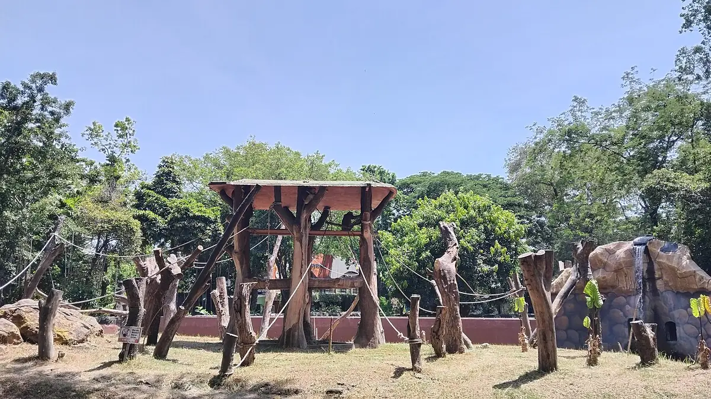
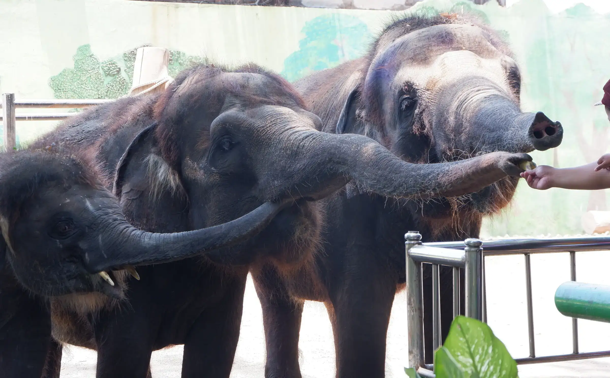
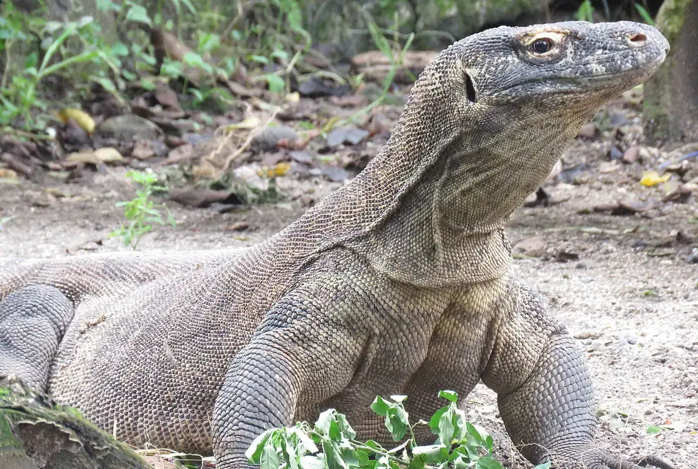
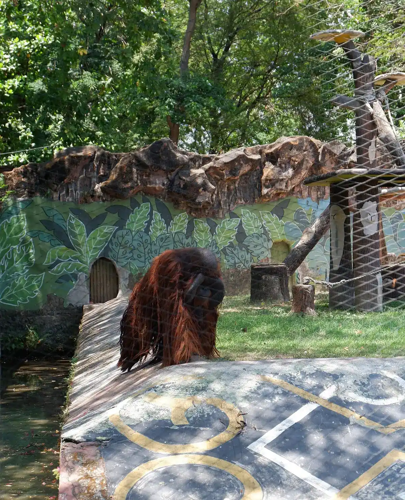
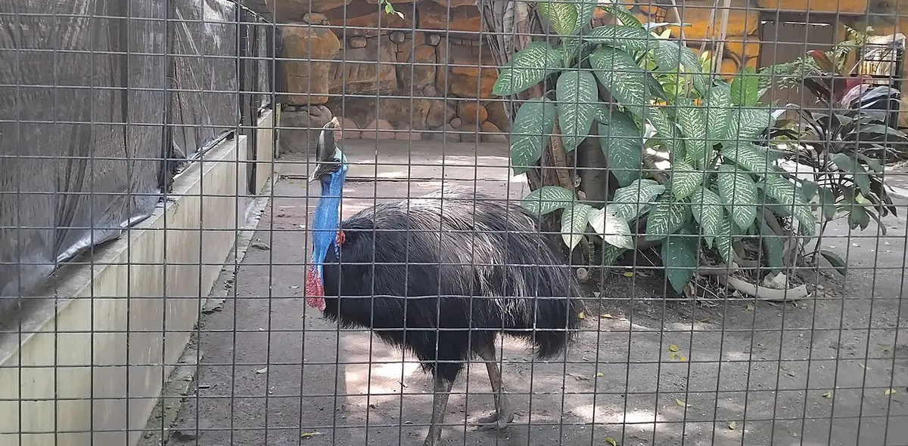
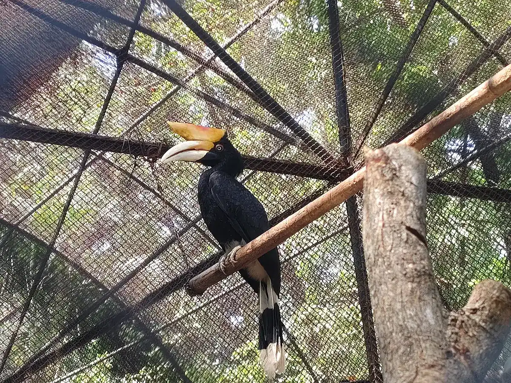

Bekantan
Monyet berhidung panjang dari hutan bakau Kalimantan.

Lebih dari 2.000 satwa, dari komodo sampai kasuari, di lahan sekitar 15 hektare.
Komodo hanya hidup liar di Nusa Tenggara Timur. KBS ikut dalam program pembiakan satwa ini.

Tiga satwa yang menghabiskan sebagian besar hidupnya di atas tanah.
Lihat wahana
Monyet berhidung panjang dari hutan bakau Kalimantan.

Kera besar Kalimantan dan Sumatra yang tidur di sarang daun.

Karnivora Asia yang memakai ekornya untuk berpegangan di dahan.
Rusa jawa adalah satwa asli Indonesia. Tiga lainnya berasal dari Afrika, Timur Tengah, dan Amerika Selatan.
Lihat area Kids ZooKasuari tidak bisa terbang dan hidup di Papua. Rangkong bersarang di lubang pohon.
Lihat harga tiket
